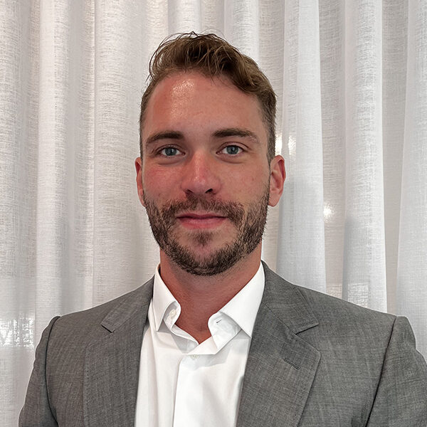
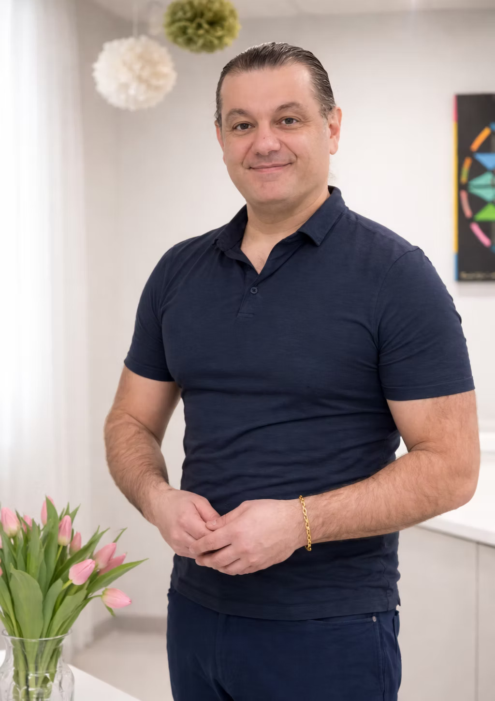
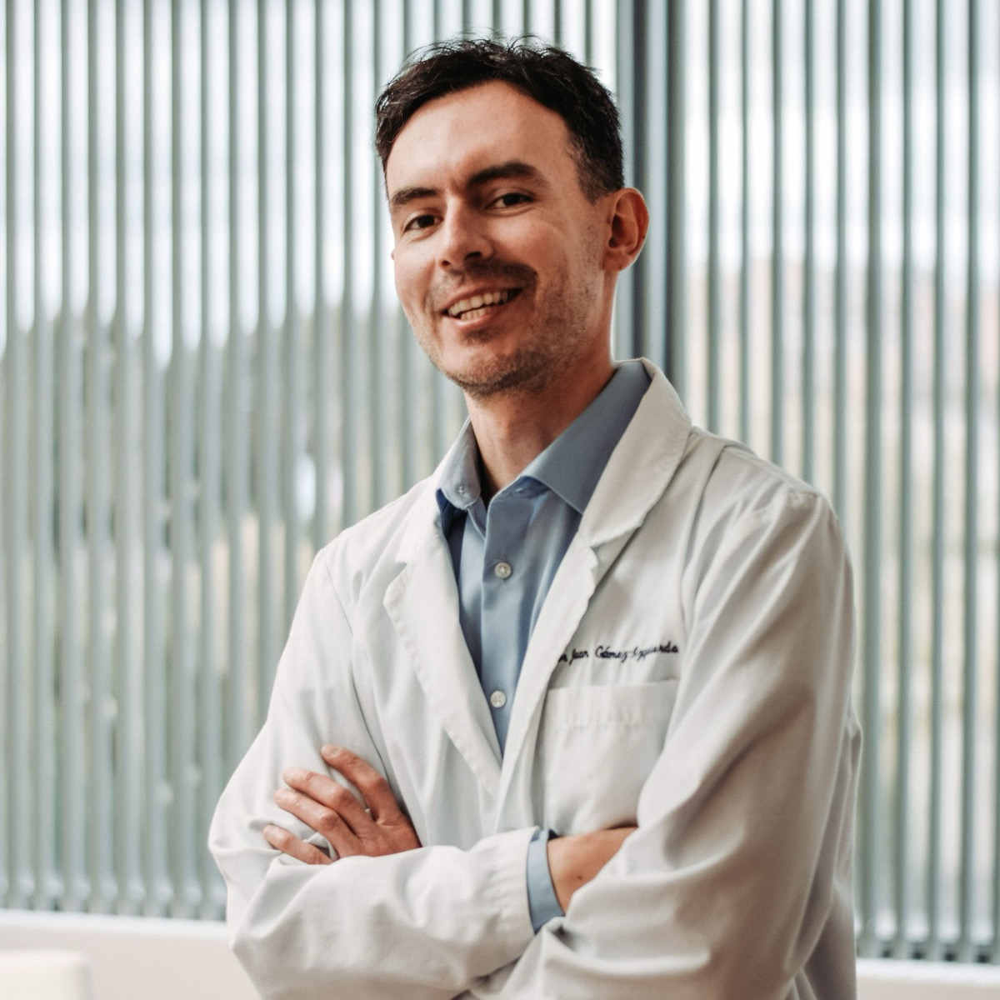

- Accueil
- L'équipe
La clinique
L'équipe
Quatre professionnels, quatre expertises complémentaires. Un principe commun : on évalue avant de traiter, et on dit non quand il faut dire non.

Direction médicale
Dr Patrick
Lapointe
Directeur médical — médecine médico-esthétique
Dr Patrick Lapointe assure la direction médicale de la clinique. Il exerce en médecine médico-esthétique et veille à la cohérence des parcours offerts : indications, protocoles, encadrement des traitements et qualité du suivi.
C'est lui qui s'assure qu'un traitement n'est proposé que lorsqu'il est réellement indiqué — et que chaque patient reçoit l'information nécessaire pour décider en connaissance de cause.

Hormonothérapie
Dr George
Kannab-Ayda
Médecin — médecine esthétique
Dr George Kannab-Ayda est médecin à Montréal. Il exerce également en médecine esthétique, avec un intérêt particulier pour le rajeunissement du visage, les traitements injectables, le PRP, les traitements au laser et les soins médico-esthétiques non chirurgicaux.
C'est lui qui prend en charge notre programme d'hormonothérapie. Son approche repose sur une évaluation médicale personnalisée, la sécurité du patient, le consentement éclairé et un plan de traitement adapté aux besoins et au profil médical de chaque personne.
Avant tout traitement, une consultation médicale permet d'évaluer les attentes, les contre-indications, les risques, les limites et les options de traitement appropriées. Dr Kannab-Ayda privilégie une approche professionnelle, individualisée et orientée vers des résultats naturels.

Greffe de cheveux FUE
Dr Juan Camilo
Gomez-Izquierdo
MD, Ph. D. — CCMF, greffe de cheveux FUE
C'est lui qui réalise nos greffes de cheveux — et c'est aussi lui qui assure votre suivi. Un seul médecin, du premier tracé de la ligne frontale jusqu'aux contrôles du douzième mois.
Son parcours ne se résume pas à une formation en esthétique ajoutée à un diplôme de médecine. Plus de dix ans de formation et de pratique médicale, un doctorat en chirurgie expérimentale de l'Université McGill, une pratique en médecine familiale, et une production scientifique réelle — une quinzaine de publications revues par les pairs.
Il est certifié par le Canadian Board of Aesthetic Medicine et a complété une formation esthétique avancée par l'entremise du Collège des médecins du Québec. À la clinique, sa pratique est consacrée à la greffe de cheveux FUE.
Il parle français, anglais, espagnol et italien. Et il a la manie, héritée de la recherche, d'expliquer pourquoi il propose une chose plutôt qu'une autre — chiffres à l'appui.
Injections & PRF
Martine
Fortier
Infirmière injectrice — médecine esthétique
Martine Fortier réalise nos injections de PRF ainsi que les traitements médico-esthétiques (neuromodulateur et agent de comblement). Infirmière injectrice formée en médecine esthétique, elle travaille en collaboration directe avec nos médecins, dans le cadre des protocoles établis à la consultation.
Ce qui distingue une bonne injectrice, ce n'est pas le produit qu'elle utilise — c'est sa lecture de l'anatomie, sa maîtrise de la profondeur et de la répartition, sa capacité à reconnaître et à gérer une complication, et son jugement sur le dosage.
Chez l'homme, ce jugement compte double : musculature faciale plus dense, peau plus épaisse, proportions différentes. Une injection calquée sur un protocole féminin donne un résultat qui sonne faux. Ici, on travaille la structure — mâchoire, menton, tempes — et on préserve la mobilité du visage.
« Un traitement qu'on ne peut pas justifier, c'est un traitement qu'on ne devrait pas proposer. »
Notre cadre de pratique
Quatre règles
qu'on ne négocie pas
Évaluer avant de traiter
Bilan sanguin, examen du cuir chevelu, examen facial : le diagnostic précède toujours l'ordonnance. Aucun traitement n'est vendu sur la base d'un questionnaire en ligne.
Consentement éclairé
Vous connaissez les bénéfices attendus, les risques, les limites, les alternatives et le coût réel avant de décider. Vous ne signez jamais le jour même sous pression.
Dire non quand il faut
Certains patients ne sont pas admissibles, d'autres consultent trop tôt ou trop tard. On vous le dira, avec la raison — même si ça nous coûte une vente.
Assurer le suivi
Un traitement sans suivi n'est pas un traitement. Ajustements de dosage, contrôles sanguins, bilans photographiques : la suite fait partie du service.
Prochaine étape
Parlons de
votre dossier.
Une consultation, un diagnostic, un plan. Vous décidez ensuite — et pas avant.